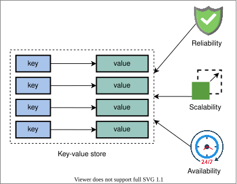
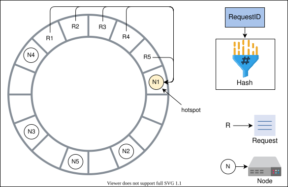
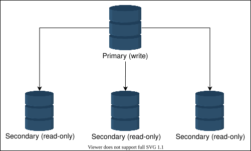
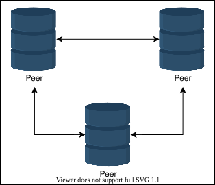
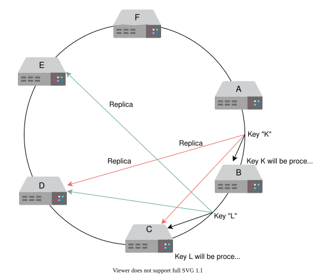

10. Key-value Store
System Design: The Key-value Store
System Design: The Key-value Store
Let's understand the basics of designing a key-value store.
We'll cover the following
Introduction to key-value stores#
Key-value stores are distributed hash tables (DHTs). A key is generated by the hash function and should be unique. In a key-value store, a key binds to a specific value and doesn’t assume anything about the structure of the value. A value can be a blob, image, server name, or anything the user wants to store against a unique key.
Usually, it’s preferred to keep the size of value relatively smaller (KB to MB). We can put large data in the blob store and put links to that data in the value field. Key-value stores are useful in many situations, such as storing user sessions in a web application and building NoSQL databases.
It’s challenging to scale traditional databases with strong consistency and high availability in a distributed environment. Many real-world services like Amazon, Facebook, Instagram, Netflix, and many more use primary-key access to a data store instead of traditional online transaction processing (OLTP) databases. Examples of key-value store usage include bestseller lists, shopping carts, customer preferences, session management, sales rank, and product catalogs.

Note: Many applications might not require a rich programming model provided by a traditional relational database management system (RDBMS). Using RDBMS for such applications is often expensive in terms of cost and performance.
How will we design a key-value store?#
We’ve divided the key-value system design into the following four lessons:
- Design a Key-value Store: We’ll define the requirements of a key-value store and design the API.
- Ensure Scalability and Replication: We’ll learn to achieve scalability using consistent hashing and replicate the partitioned data.
- Versioning Data and Achieving Configurability: We’ll learn to resolve conflicts that occur due to changes made by more than one entity, and we’ll make our system more configurable for different use cases.
- Enable Fault Tolerance and Failure Detection: We’ll learn to make a key-value store fault tolerant and how to detect failures in the system.
Design of a Key-value Store
Design of a Key-value Store
Learn about the functional and non-functional requirements and the API design of a key-value store.
We'll cover the following
Requirements#
Let’s list the requirements of designing a key-value store to overcome the problems of traditional databases.
Functional requirements#
The functional requirements are as follows:
-
Configurable service: Some applications might have a tendency to trade strong consistency for higher availability. We need to provide a configurable service so that different applications could use a range of consistency models. We need tight control over the trade-offs between availability, consistency, cost-effectiveness, and performance.
-
Ability to always write: The applications should always have the ability to write into the key-value storage. If the user wants strong consistency, this requirement might not always be fulfilled due to the implications of the CAP theorem.
-
Hardware heterogeneity: The system shouldn’t have distinguished nodes. Each node should be functionally able to do any task. Though servers can be heterogeneous, newer hardware might be more capable than older ones.
Non-functional requirements#
The non-functional requirements are as follows:
-
Scalable: Key-value stores should run on tens of thousands of servers distributed across the globe. Incremental scalability is highly desirable. We should add or remove the servers as needed with minimal to no disruption to the service availability. Moreover, our system should be able to handle an enormous number of users of the key-value store.
-
Available: We need to provide continuous service, so availability is very important. This property is configurable. So, if the user wants strong consistency, we’ll have less availability and vice versa.
-
Fault tolerance: The key-value store should operate uninterrupted despite failures in servers or their components.
Point to Ponder
Question
Why do we need to run key-value stores on multiple servers?
Assumptions#
We’ll assume the following to keep our design simple:
-
The data centers hosting the service are trusted (non-hostile).
-
All the required authentication and authorization are already completed.
-
User requests and responses are relayed over HTTPS.
API design#
Key-value stores, like ordinary hash tables, provide two primary functions, which are get and put.
Let’s look at the API design.
The get function
The API call to get a value should look like this:
get(key)
We return the associated value on the basis of the parameter key. When data is replicated, it locates the object replica associated with a specific key that’s hidden from the end user. It’s done by the system if the store is configured with a weaker data consistency model. For example, in eventual consistency, there might be more than one value returned against a key.
Parameter | Description |
| It’s the |
The put function
The API call to put the value into the system should look like this:
put(key, value)
It stores the value associated with the key. The system automatically determines where data should be placed. Additionally, the system often keeps metadata about the stored object. Such metadata can include the version of the object.
Parameter | Description |
| It's the |
| It's the object to be stored against the |
Point to Ponder
Question
We often keep hashes of the value (and at times, value + associated key) as metadata for data integrity checks. Should such a hash be taken after any data compression or encryption, or should it be taken before?
Data type#
The key is often a primary key in a key-value store, while the value can be any arbitrary binary data.
Note: Dynamo uses MD5 hashes on the key to generate a 128-bit identifier. These identifiers help the system determine which server node will be responsible for this specific key.
In the next lesson, we’ll learn how to design our key-value store. First, we’ll focus on adding scalability, replication, and versioning of our data to our system. Then, we’ll ensure the functional requirements and make our system fault tolerant. We’ll fulfill a few of our non-functional requirements first because implementing our functional requirements depends on the method chosen for scalability.
Note: This chapter is based on Dynamo, which is an influential work in the domain of key-value stores.
Ensure Scalability and Replication
Ensure Scalability and Replication
Learn how consistent hashing enables scalability and how we replicate such partitioned data.
Add scalability#
Let’s start with one of the core design requirements: scalability. We store key-value data in storage nodes. With a change in demand, we might need to add or remove storage nodes. It means we need to partition data over the nodes in the system to distribute the load across all nodes.
For example, let’s consider that we have four nodes, and we want 25% of the requests to go to each node to balance the load equally. The traditional way to solve this is through the modulus operator. When a request comes in, we assign a request ID, calculate its hash, and find the remainder by taking the modulus with the number of nodes available. The remainder value is the node number, and we send the request to that node to process it.
The following slides explain this process:
We want to add and remove nodes with minimal change in our infrastructure. But in this method, when we add or remove a node, we need to move a lot of keys. This is inefficient. For example, node 2 is removed, and suppose for the same request ID, the new server to process a request will be node 1 because 10%3=1. Nodes hold information in their local caches, like keys and their values. So, we need to move that request’s data to the next node that has to process the request. But this replication can be costly and can cause high latency.
Next, we’ll learn how to copy data efficiently.
Point to Ponder
Question
Why didn’t we use load balancers to distribute the requests to all nodes?
Consistent hashing#
Consistent hashing is an effective way to manage the load over the set of nodes. In consistent hashing, we consider that we have a conceptual ring of hashes from 0 to n−1, where n is the number of available hash values. We use each node’s ID, calculate its hash, and map it to the ring. We apply the same process to requests. Each request is completed by the next node that it finds by moving in the clockwise direction in the ring.
Whenever a new node is added to the ring, the immediate next node is affected. It has to share its data with the newly added node while other nodes are unaffected. It’s easy to scale since we’re able to keep changes to our nodes minimal. This is because only a small portion of overall keys need to move. The hashes are randomly distributed, so we expect the load of requests to be random and distributed evenly on average on the ring.
The primary benefit of consistent hashing is that as nodes join or leave, it ensures that a minimal number of keys need to move. However, the request load isn’t equally divided in practice. Any server that handles a large chunk of data can become a bottleneck in a distributed system. That node will receive a disproportionately large share of data storage and retrieval requests, reducing the overall system performance. As a result, these are referred to as hotspots.
As shown in the figure below, most of the requests are between the N4 and N1 nodes. Now, N1 has to handle most of the requests compared to other nodes, and it has become a hotspot. That means non-uniform load distribution has increased load on a single server.
Note: It’s a good exercise to think of possible solutions to the non-uniform load distribution before reading on.

Use virtual nodes#
We’ll use virtual nodes to ensure a more evenly distributed load across the nodes. Instead of applying a single hash function, we’ll apply multiple hash functions onto the same key.
Let’s take an example. Suppose we have three hash functions. For each node, we calculate three hashes and place them into the ring. For the request, we use only one hash function. Wherever the request lands onto the ring, it’s processed by the next node found while moving in the clockwise direction. Each server has three positions, so the load of requests is more uniform. Moreover, if a node has more hardware capacity than others, we can add more virtual nodes by using additional hash functions. This way, it’ll have more positions in the ring and serve more requests.
Advantages of virtual nodes#
Following are some advantages of using virtual nodes:
-
If a node fails or does routine maintenance, the workload is uniformly distributed over other nodes. For each newly accessible node, the other nodes receive nearly equal load when it comes back online or is added to the system.
-
It’s up to each node to decide how many virtual nodes it’s responsible for, considering the heterogeneity of the physical infrastructure. For example, if a node has roughly double the computational capacity as compared to the others, it can take more load.
We’ve made the proposed design of key-value storage scalable. The next task is to make our system highly available.
Data replication#
We have various methods to replicate the storage. It can be either a primary-secondary relationship or a peer-to-peer relationship.
Primary-secondary approach#
In a primary-secondary approach, one of the storage areas is primary, and other storage areas are secondary. The secondary replicates its data from the primary. The primary serves the write requests while the secondary serves read requests. After writing, there’s a lag for replication. Moreover, if the primary goes down, we can’t write into the storage, and it becomes a single point of failure.

Point to Ponder
Question
Does the primary-secondary approach fulfill the requirements of the key-value store that we defined in the System Design: The Key-value Store lesson?
Peer-to-peer approach#
In the peer-to-peer approach, all involved storage areas are primary, and they replicate the data to stay updated. Both read and write are allowed on all nodes. Usually, it’s inefficient and costly to replicate in all n nodes. Instead, three or five is a common choice for the number of storage nodes to be replicated.

We’ll use a peer-to-peer relationship for replication. We’ll replicate the data on multiple hosts to achieve durability and high availability. Each data item will be replicated at n hosts, where n is a parameter configured per instance of the key-value store. For example, if we choose n to be 5, it means we want our data to be replicated to five nodes.
Each node will replicate its data to the other nodes. We’ll call a node coordinator that handles read or write operations. It’s directly responsible for the keys. A coordinator node is assigned the key “K.” It’s also responsible for replicating the keys to n−1 successors on the ring (clockwise). These lists of successor virtual nodes are called preference lists. To avoid putting replicas on the same physical nodes, the preference list can skip those virtual nodes whose physical node is already in the list.
Let’s consider the illustration given below. We have a replication factor, n, set to 3. For the key “K,” the replication is done on the next three nodes: B, C, and D. Similarly, for key “L,” the replication is done on nodes C, D, and E.

Point to Ponder
Question
What is the impact of synchronous or asynchronous replication?
In the context of the CAP theorem, key-value stores can either be consistent or be available when there are network partitions. For key-value stores, we prefer availability over consistency. It means if the two storage nodes lost connection for replication, they would keep on handling the requests sent to them, and when the connection is restored, they’ll sync up. In the disconnected phase, it’s highly possible for the nodes to be inconsistent. So, we need to resolve such conflicts. In the next lesson, we’ll learn a concept to handle inconsistencies using the versioning of our data.
Versioning Data and Achieving Configurability
Versioning Data and Achieving Configurability
Learn how to resolve conflicts via versioning and how to make the key-value storage into a configurable service.
Data versioning#
When network partitions and node failures occur during an update, an object’s version history might become fragmented. As a result, it requires a reconciliation effort on the part of the system. It’s necessary to build a way that explicitly accepts the potential of several copies of the same data so that we can avoid the loss of any updates. It’s critical to realize that some failure scenarios can lead to multiple copies of the same data in the system. So, these copies might be the same or divergent. Resolving the conflicts among these divergent histories is essential and critical for consistency purposes.
To handle inconsistency, we need to maintain causality between the events. We can do this using the timestamps and update all conflicting values with the value of the latest request. But time isn’t reliable in a distributed system, so we can’t use it as a deciding factor.
Another approach to maintaining causality effectively is by using vector clocks. A vector clock is a list of (node, counter) pairs. There’s a single vector clock for every version of an object. If two objects have different vector clocks, we’re able to tell whether they’re causally related or not (more on this in a bit). Unless one of the two changes is reconciled, the two are deemed at odds.
Modify the API design#
We talked about how we can decide if two events are causally related or not using a vector clock value. For this, we need information about which node performed the operation before and what its vector clock value was. This is the context of an operation. So, we’ll modify our API design as follows.
The API call to get a value should look like this:
get(key)
Parameter | Description |
| This is the |
We return an object or a collection of conflicting objects along with a context. The context holds encoded metadata about the object, including details such as the object’s version.
The API call to put the value into the system should look like this:
put(key, context, value)
Parameter | Description |
| This is the |
| This holds the metadata for each object. |
| This is the object that needs to be stored against the |
The function finds the node where the value should be placed on the basis of the key and stores the value associated with it. The context is returned by the system after the get operation. If we have a list of objects in context that raises a conflict, we’ll ask the client to resolve it.
To update an object in the key-value store, the client must give the context. We determine version information using a vector clock by supplying the context from a previous read operation. If the key-value store has access to several branches, it provides all objects at the leaf nodes, together with their respective version information in context, when processing a read request. Reconciling disparate versions and merging them into a single new version is considered an update.
Note: This process of resolving conflicts is comparable to how it’s done in Git. If Git is able to merge multiple versions into one, merging is performed automatically. It’s up to the client (the developer) to resolve conflicts manually if automatic conflict resolution is not possible. Along the same lines, our system can try automatic conflict resolution and, if not possible, ask the application to provide a final resolved value.
Vector clock usage example#
Let’s consider an example. Say we have a write operation request. Node A handles the first version of the write request, E1. The corresponding vector clock has node information and its counter—that is, [A,1]. Node A handles another write for the same object on which the previous write was performed. So, for E2, we have [A,2]. E1 is no longer required because E2 was updated on the same node. E2 reads the changes made by E1, and then new changes are made. Suppose a network partition happens. Now, the request is handled by two different nodes, B and C. The context with updated versions, which are E3, E4, and their related clocks, which are ([A,2],[B,1]) and ([A,2],[C,1]), are now in the system.
Suppose the network partition is repaired, and the client requests a write again, but now we have conflicts. The context ([A,3],[B,1],[C,1]) of the conflicts are returned to the client. After the client does reconciliation and A coordinates the write, we have E5 with the clock ([A,4]).
Compromise with vector clocks limitations#
The size of vector clocks may increase if multiple servers write to the same object simultaneously. It’s unlikely to happen in practice because writes are typically handled by one of the top n nodes in a preference list.
For example, if there are network partitions or multiple server failures, write requests may be processed by nodes not in the top n nodes in the preference list. As a result we can have a long version like this: ([A,10],[B,4],[C,1],[D,2],[E,1],[F,3],[G,5],[H,7],[I,2],[J,2],[K,1],[L,1]). It’s a hassle to store and maintain such a long version history.
We can limit the size of the vector clock in these situations. We employ a clock truncation strategy to store a timestamp with each (node, counter) pair to show when the data item was last updated by the node. Vector clock pairs are purged when the number of (node, counter) pairs exceeds a predetermined threshold (let’s say 10). Because the descendant linkages can’t be precisely calculated, this truncation approach can lead to a lack of efficiency in reconciliation.
The get and put operations#
One of our functional requirements is that the system should be configurable. We want to control the trade-offs between availability, consistency, cost-effectiveness, and performance. So, let’s achieve configurability by implementing the basic get and put functions of the key-value store.
Every node can handle the get (read) and put (write) operations in our system. A node handling a read or write operation is known as a coordinator. The coordinator is the first among the top n nodes in the preference list.
There can be two ways for a client to select a node:
- We route the request to a generic load balancer.
- We use a partition-aware client library that routes requests directly to the appropriate coordinator nodes.
Both approaches have their benefits. The client isn’t linked to the code in the first approach, whereas lower latency is achievable in the second. The latency is lower due to the reduced number of hops because the client can directly go to a specific server.
Let’s make our service configurable by having an ability where we can control the trade-offs between availability, consistency, cost-effectiveness, and performance. We can use a consistency protocol similar to those used in quorum systems.
Let’s take an example. Say n in the top n of the preference list is equal to 3. It means three copies of the data need to be maintained. We assume that nodes are placed in a ring. Say A, B, C, D, and E is the clockwise order of the nodes in that ring. If the write function is performed on node A, then the copies of that data will be placed on B and C. This is because B and C are the next nodes we find while moving in a clockwise direction of the ring.
Usage of r and w#
Now, consider two variables, r and w. The r means the minimum number of nodes that need to be part of a successful read operation, while w is the minimum number of nodes involved in a successful write operation. So if r=2, it means our system will read from two nodes when we have data stored in three nodes. We need to pick values of r and w such that at least one node is common between them. This ensures that readers could get the latest-written value. For that, we’ll use a quorum-like system by setting r+w>n.
The following table gives an overview of how the values of n, r, and w affect the speed of reads and writes:
n | r | w | Description |
3 | 2 | 1 | It won't be allowed as it violates our constraint r + w > n . |
3 | 2 | 2 | It will be allowed as it fulfills constraints. |
3 | 3 | 1 | It will provide speedy writes and slower reads since readers need to go to all n replicas for a value. |
3 | 1 | 3 | It will provide speedy reads from any node but slow writes since we now need to write to all n nodes synchronously. |
Let’s say n=3, which means we have three nodes where the data is copied to. Now, for w=2, the operation makes sure to write in two nodes to make this request successful. For the third node, the data is updated asynchronously.
In this model, the latency of a get operation is decided by the slowest of the r replicas. The reason is that for the larger value of r, we focus more on availability and compromise consistency.
The coordinator produces the vector clock for the new version and writes the new version locally upon receiving a put() request for a key. The coordinator sends n highest-ranking nodes with the updated version and a new vector clock. We consider a write successful if at least w−1 nodes respond. Remember that the coordinate writes to itself first, so we get w writes in total.
Requests for a get() operation are made to the n highest-ranked reachable nodes in a preference list for a key. They wait for r answers before returning the results to the client. Coordinators return all dataset versions that they regard as unrelated if they get several datasets from the same source (divergent histories that need reconciliation). The conflicting versions are then merged, and the resulting key’s value is rewritten to override the previous versions.
By now, we’ve fulfilled the scalability, availability, conflict-resolution, and configurable service requirements. The last requirement is to have a fault-tolerant system. Let’s discuss how we’ll achieve it in the next lesson.
Enable Fault Tolerance and Failure Detection
Enable Fault Tolerance and Failure Detection
Learn how to make a key-value store fault tolerant and able to detect failure.
Handle temporary failures#
Typically, distributed systems use a quorum-based approach to handle failures. A quorum is the minimum number of votes required for a distributed transaction to proceed with an operation. If a server is part of the consensus and is down, then we can’t perform the required operation. It affects the availability and durability of our system.
We’ll use a sloppy quorum instead of strict quorum membership. Usually, a leader manages the communication among the participants of the consensus. The participants send an acknowledgment after committing a successful write. Upon receiving these acknowledgments, the leader responds to the client. However, the drawback is that the participants are easily affected by the network outage. If the leader is temporarily down and the participants can’t reach it, they declare the leader dead. Now, a new leader has to be reelected. Such frequent elections have a negative impact on performance because the system spends more time picking a leader than accomplishing any actual work.
In the sloppy quorum, the first n healthy nodes from the preference list handle all read and write operations. The n healthy nodes may not always be the first n nodes discovered when moving clockwise in the consistent hash ring.
Let’s consider the following configuration with n=3. If node A is briefly unavailable or unreachable during a write operation, the request is sent to the next healthy node from the preference list, which is node D in this case. It ensures the desired availability and durability. After processing the request, the node D includes a hint as to which node was the intended receiver (in this case, A). Once node A is up and running again, node D sends the request information to A so it can update its data. Upon completion of the transfer, D removes this item from its local storage without affecting the total number of replicas in the system.
This approach is called a hinted handoff. Using it, we can ensure that reads and writes are fulfilled if a node faces temporary failure.
Note: A highly available storage system must handle data center failure due to power outages, cooling failures, network failures, or natural disasters. For this, we should ensure replication across the data centers. So, if one data center is down, we can recover it from the other.
Point to Ponder
Question
What are the limitations of using hinted handoff?
Handle permanent failures#
In the event of permanent failures of nodes, we should keep our replicas synchronized to make our system more durable. We need to speed up the detection of inconsistencies between replicas and reduce the quantity of transferred data. We’ll use Merkle trees for that.
In a Merkle tree, the values of individual keys are hashed and used as the leaves of the tree. There are hashes of their children in the parent nodes higher up the tree. Each branch of the Merkle tree can be verified independently without the need to download the complete tree or the entire dataset. While checking for inconsistencies across copies, Merkle trees reduce the amount of data that must be exchanged. There’s no need for synchronization if, for example, the hash values of two trees’ roots are the same and their leaf nodes are also the same. Until the process reaches the tree leaves, the hosts can identify the keys that are out of sync when the nodes exchange the hash values of children. The Merkle tree is a mechanism to implement anti-entropy, which means to keep all the data consistent. It reduces data transmission for synchronization and the number of discs accessed during the anti-entropy process.
The following slides explain how Merkle trees work:
Anti-entropy with Merkle trees#
Each node keeps a distinct Merkle tree for the range of keys that it hosts for each virtual node. The nodes can determine if the keys in a given range are correct. The root of the Merkle tree corresponding to the common key ranges is exchanged between two nodes. We’ll make the following comparison:
- Compare the hashes of the root node of Merkle trees.
- Do not proceed if they’re the same.
- Traverse left and right children using recursion. The nodes identify whether or not they have any differences and perform the necessary synchronization.
The following slides explain more about how Merkle trees work.
Note: We assume the ranges defined are hypothetical for illustration purposes.
The advantage of using Merkle trees is that each branch of the Merkle tree can be examined independently without requiring nodes to download the tree or the complete dataset. It reduces the quantity of data that must be exchanged for synchronization and the number of disc accesses that are required during the anti-entropy procedure.
The disadvantage is that when a node joins or departs the system, the tree’s hashes are recalculated because multiple key ranges are affected.
We want our nodes to detect the failure of other nodes in the ring, so let’s see how we can add it to our proposed design.
Promote membership in the ring to detect failures#
The nodes can be offline for short periods, but they may also indefinitely go offline. We shouldn’t rebalance partition assignments or fix unreachable replicas when a single node goes down because it’s rarely a permanent departure. Therefore, the addition and removal of nodes from the ring should be done carefully.
Planned commissioning and decommissioning of nodes results in membership changes. These changes form history. They’re recorded persistently on the storage for each node and reconciled among the ring members using a gossip protocol. A gossip-based protocol also maintains an eventually consistent view of membership. When two nodes randomly choose one another as their peer, both nodes can efficiently synchronize their persisted membership histories.
Let’s learn how a gossip-based protocol works by considering the following example. Say node A starts up for the first time, and it randomly adds nodes B and E to its token set. The token set has virtual nodes in the consistent hash space and maps nodes to their respective token sets. This information is stored locally on the disk space of the node.
Now, node A handles a request that results in a change, so it communicates this to B and E. Another node, D, has C and E in its token set. It makes a change and tells C and E. The other nodes do the same process. This way, every node eventually knows about every other node’s information. It’s an efficient way to share information asynchronously, and it doesn’t take up a lot of bandwidth.
Points to Ponder
Question 1
Keeping in mind our consistent hashing approach, can the gossip-based protocol fail?
1 of 2
Decentralized failure detection protocols use a gossip-based protocol that allows each node to learn about the addition or removal of other nodes. The join and leave methods of the explicit node notify the nodes about the permanent node additions and removals. The individual nodes detect temporary node failures when they fail to communicate with another node. If a node fails to communicate to any of the nodes present in its token set for the authorized time, then it communicates to the administrators that the node is dead.
Conclusion#
A key-value store provides flexibility and allows us to scale the applications that have unstructured data. Web applications can use key-value stores to store information about a user’s session and preferences. When using a user key, all the data is accessible, and key-value stores are ideal for rapid reads and write operations. Key-value stores can be used to power real-time recommendations and advertising because the stores can swiftly access and present fresh recommendations.